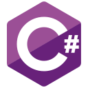
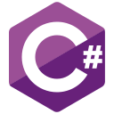
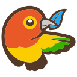
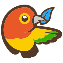
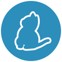
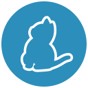

Back in the day, I built Angelfire sites with my friends. We had no idea what we were doing, and the sites looked bad (even by 90's standards). Despite this, building simple websites was super fun. All these years later, writing code and building software is still just as fun, except now I actually know what I'm doing..
After graduating from Boston College with an English Degree, I realized my interest in technology was still just as strong, and the idea of learning to code was always in the back of my mind. In late 2016, I found out about Nashville Software School and finally took the plunge and enrolled in April, 2017. After an intense six months, I learned more than how to write code-- I learned how to learn to write code and how to solve problems. With these skills in my toolbox, and the know-how I gained from NSS, I'm ready to take the next step become the best developer I can be.
I've been exposed to the following technologies. Some I've just played around with, others I've built full scale projects with. As I continue my journey, I look forward to adding to my toolbox.


 

 

 



A single page web application built to help users find rescue dogs in their local area. Using the PetFinder.com API, a random dog is displayed upon page load. The user is able to save the dog to their profile, view a listing of twenty five local shelters in the Nashville, TN area, as well as the complete listings for each shelter. Built with AngularJS, Sass, Bootstrap and Firebase.

BiblioFile is an MVC web app that allows uses to catalogue what’s on their bookshelf, both what has been read and what the user is planning on reading. The user’s collections are searchable and books can be added or removed at any time. User’s books can also be moved from the “To Read” section to the “Read” table. Built using C#/.NET, ASP.NET, SQLite and Bootstrap.